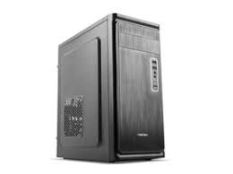

A számítógép szerelése általában a következõ lépéseket tartalmazza:
- Alaplap beszerelése: Az alaplapot az üres házba kell rögzíteni.
- Processzor és hûtés beszerelése: A processzort és a hûtõt az alaplapra kell helyezni.
- Memória (RAM) behelyezése: A RAM modulokat az alaplap megfelelõ slotjaiba kell illeszteni.
- Merevlemez/SSD rögzítése: A tárolóeszközt az alaplaphoz és a házhoz kell csatlakoztatni.
- Videókártya behelyezése: A videókártyát az alaplap PCI-e slotjába kell helyezni.
- Tápegység csatlakoztatása: A tápegységet a házba kell beépíteni és csatlakoztatni kell a megfelelõ kábeleket.
